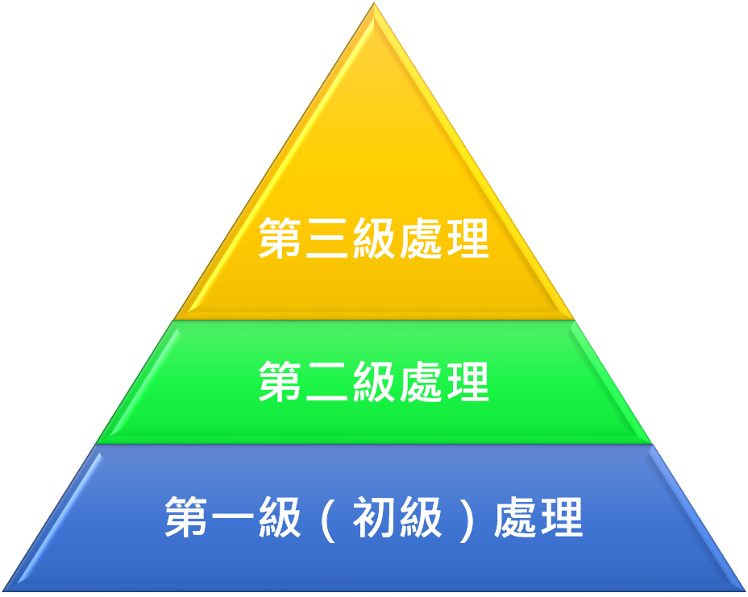

首頁
(current)
水的產生及保存
降雨
水庫
水的使用
水的淨化及監測
汙水處理廠
環境水體監測站
地下水監測站
淨水廠
水資源法規
水的永續
SDG專區
資料下載區
聯絡我們
H20水平台
Previous
Next
汙水處理廠
廠名
平均噸數
處理等級
1
2
3
4
5
名詞解釋-處理等級
※ 點擊以下按鈕了解更多資訊 ※
第一級 ( 初級 ) 處理
第二級處理
第三級處理
第一級
( 初級 )
處理
去除污水中呈懸浮狀況的
固體污染物質
，物理處理法大部分只能完結一級處理的要求。
通過一級處理的污水，生化需氧量 (BOD) 一般可去除30%左右，但仍達不到排放規範。
第二級處理
去除污水中呈膠體和溶解狀況的
有機污染物質
- 1. 生化需氧量( BOD )
2. 化學需氧量( COD )，去除率可達90%以上，使有機污染物到達排放規範。
第三級處理
進一步處理難降解的有機物、氮和磷等可以導致水體富營養化的
可溶性無機物
等。
首要辦法有 :
生物脫氮除磷法、混凝沉澱法、砂濾法、活性炭吸附法、離子交換法，和電滲分析法等

相關資料查詢
同年各月資料
(單位:月)
多年比較資料
(單位:年)
公共污水下水道
普及率
選擇年分
108
107
106
105
104
查詢
專用污水下水道普及率
選擇年分
108
107
106
105
104
查詢
建築物污水設施設置率
選擇年分
108
107
106
105
104
查詢
整體污水處理率合計
選擇年分
108
107
106
105
104
查詢
綜合圖表
選擇年分
108
107
106
105
104
查詢
※ 註 :
民國103年9月之後
普及率處理率以
( 接管戶數 × 各縣市戶量 ÷ 各縣市總人口數 )
而得。